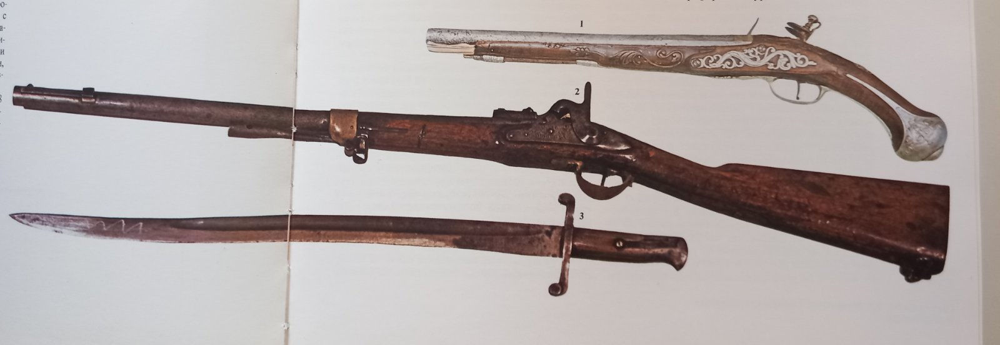
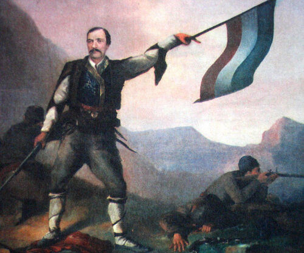
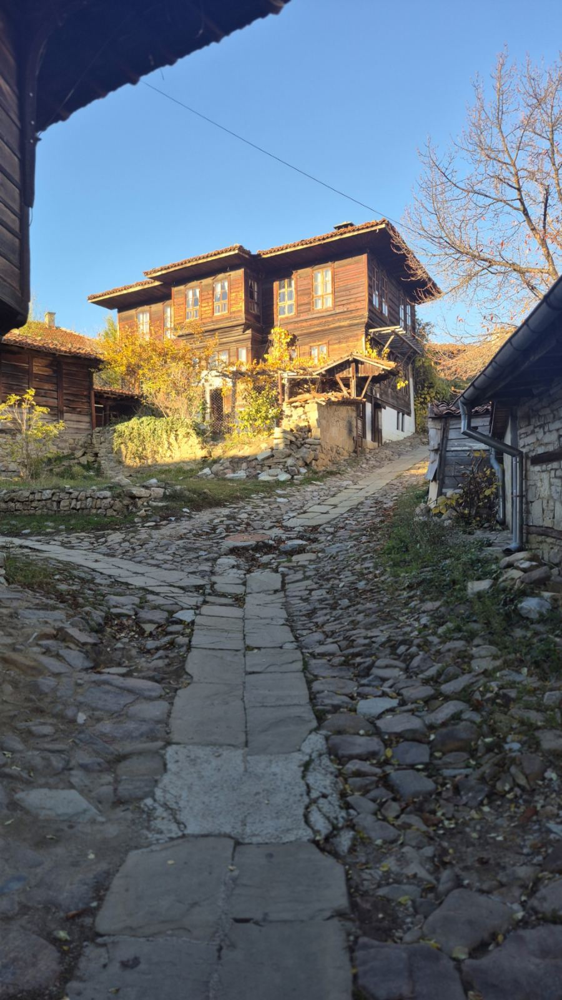
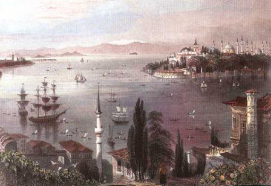
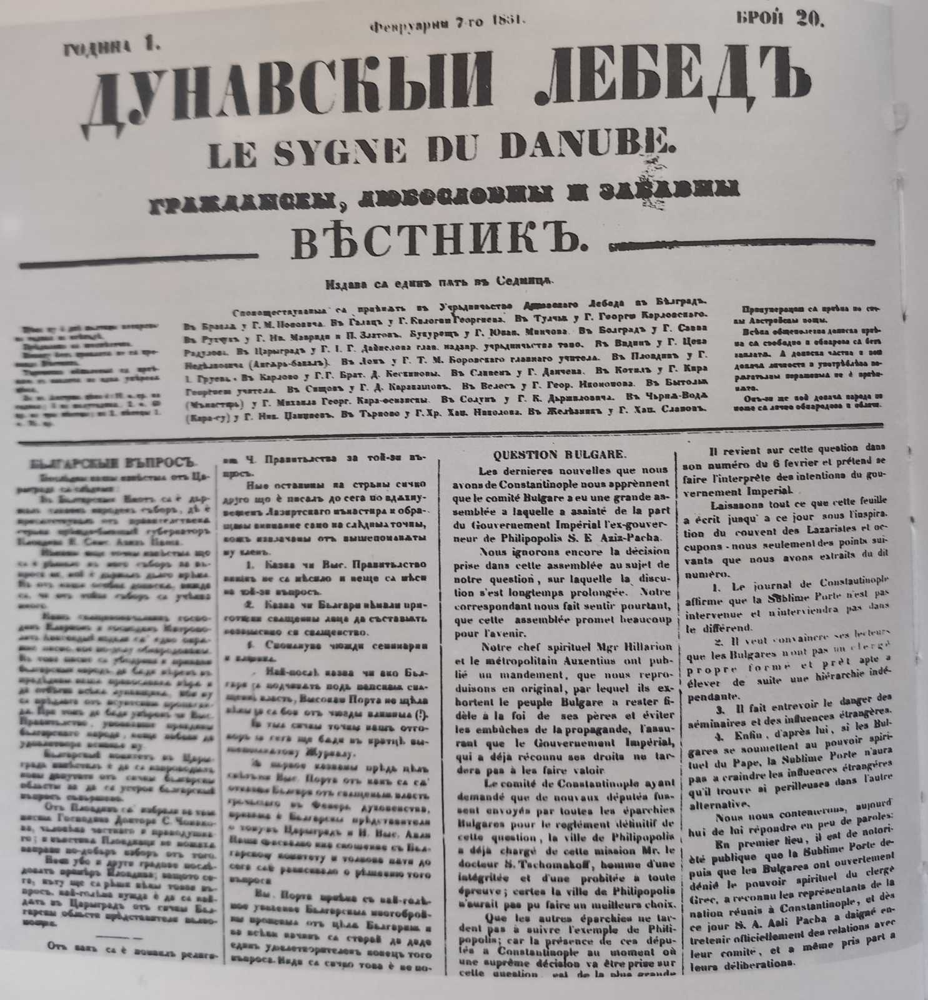
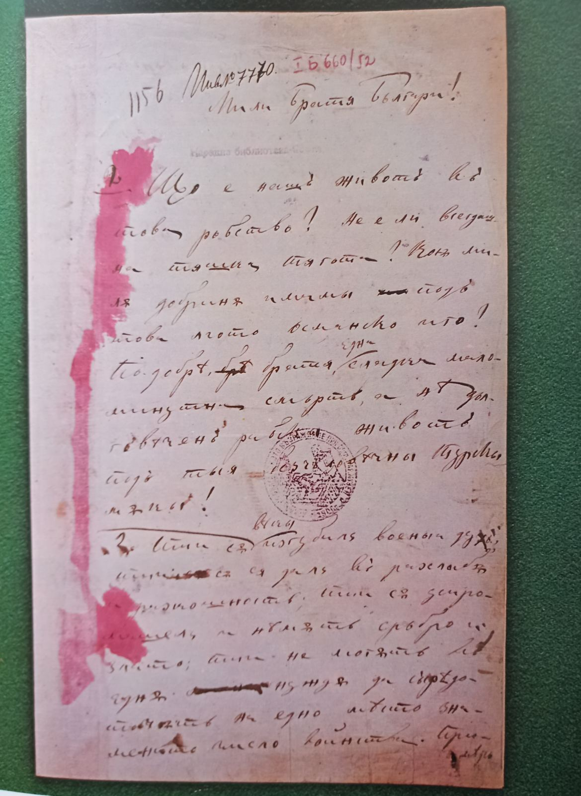
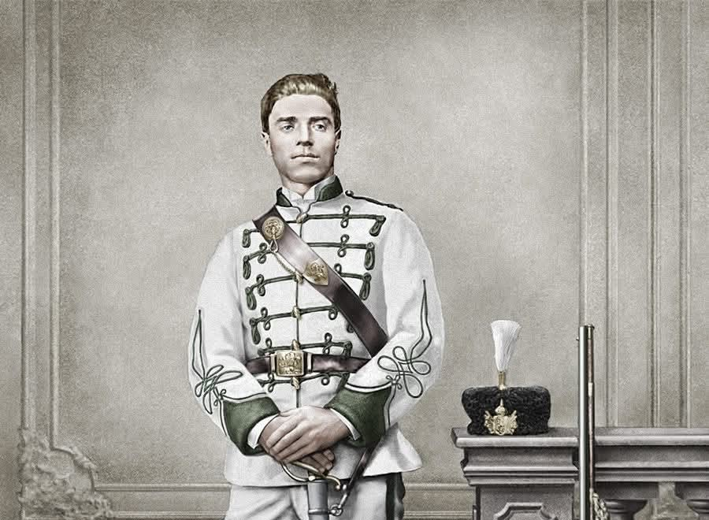
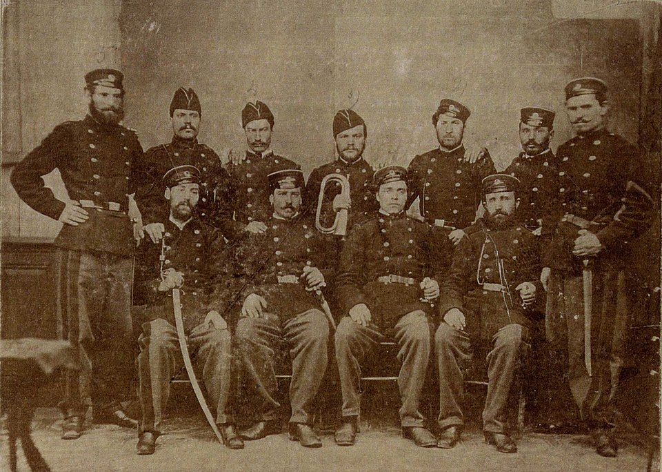
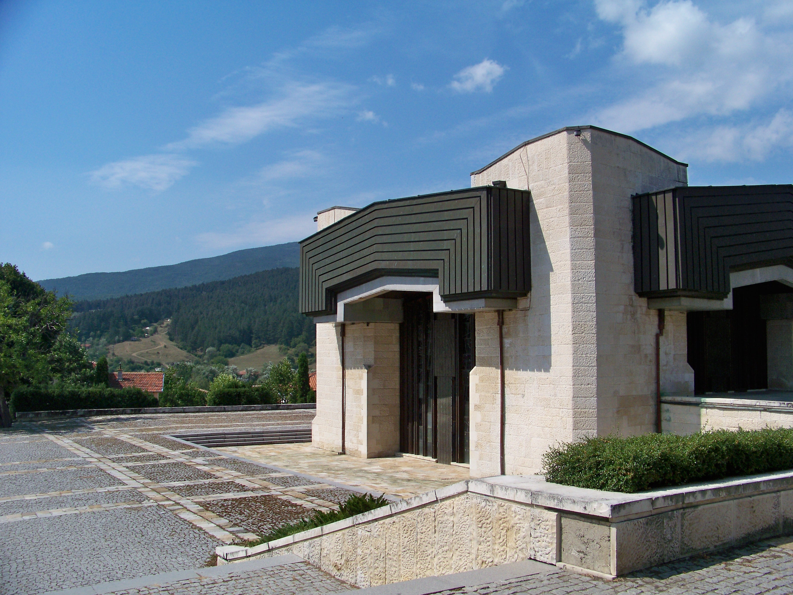

Галерия & 3D

Личното оръжие на войводата

Сабя и револвер

История на България т.6
Идеолог на организираното българско революционно движение.
Търсенето на нови пътища и форми на борба, формулирането на ясна и конкретна революционна идеология и първите стъпки за нейното прилагане в практиката се свързват с дейността на Георги Стойков Раковски (Съби Стойков Попович).
Роден през 1821 г. в Котел, Раковски произхожда от богато търговско-джелепско семейство. Огромно значение за избора на бъдещия му житейски път има семейната среда, особено вуйчо му кап. Георги Мамарчев.


През 1828 г. Раковски постъпва в котленското училище. След завършването му той продължава обучението си в Карлово при Райно Попович.
През 1837 г. заминава за Цариград и постъпва в прочутата гръцка гимназия в квартала Коручешме. В това училище учат редица други българчета. Именно там той заменя името си от Съби Попович на Сава Стефанидис, но в никакъв случай не губи будното си национално самосъзнание.
Годините, прекарани в гръцката гимназия, се отразяват плодотворно. Особено силно въздействие за формирането на неговите възгледи оказват идеите на Неофит Бозвели.
В края на 30-те години се свързва с български младежи в Атина и става съорганизатор на "Македонско дружество". През лятото на 1841 г., под името Георги Македон, заминава за Влашко. Заема се с организирането на Втория браилски бунт. Плановете му предвиждат два добре въоръжени отряда да предизвикат въстание. През февруари 1842 г. полицията разкрива заговора. Раковски е осъден на смърт, но бяга във Франция.
След завръщането си в Котел е наклеветен и попада в цариградския затвор за три години и половина. Оказал се на свобода, натрупва значително състояние от търговска дейност.



В навечерието на Кримската война Раковски създава в Цариград нова политическа организация, наречена "Тайно общество", за да подготви народа за въстание при руско настъпление. Клонове са създадени в Шумен, Търново, Русе, Свищов, Видин, Враца. Това представлява първия сериозен опит за изграждане на нелегална структура във вътрешността на земите ни.
По това време Раковски е преводач в турската армия и извършва разузнавателна дейност за Русия. Разкрит е, но бяга. През 1854 г. се установява с чета в Котел. През този период той все още търси баланс между мирните и революционни методи, но вече определя бъдещето си на радетел за свобода.
През 1856 г. заминава за Нови Сад. Започва да издава "Българска дневница" и завършва поемата "Горски пътник", където излага идеите си за четническа тактика.
През 1858 г. в Одеса се появява първият план за освобождение: "Мечом са българи своя свобода изгубили, мечом пак трябва да я добият!". Предвижда всеобщо българско въстание и Тайна канцелария.
В Белград изработва Белградския план (масово народно въстание, подкрепено от отряд от Сърбия). Учредено е Привременно българско началство.
Сформират Първа българска легия (600 доброволци - Левски, Ст. Караджа). Легията участва в боевете за Белградската крепост, но по-късно е разпусната.

Разбрал намеренията на съседите, той стига до извода, че българите трябва да разчитат само на собствените си сили. Съставя "Привременен закон за народните горски чети на 1867-о лето" - върхът в идейното му развитие.
Предвижда създаване на Върховно народно българско тайно гражданско началство. Идеите му по-късно служат за основа и при събирането на Втората българска легия.


На 9 октомври 1867 г., изтощен от неимоверния труд, скиталчествата и лишенията, Георги Стойков Раковски умира от туберкулоза в Букурещ. Той си отива от този свят само на 46 години, не дочаквайки да види родината си свободна, но оставяйки след себе си напълно изградена идеология за българската революция.
Първоначално великият българин е погребан в румънската столица. През 1885 г. неговите съратници и признателният български народ пренасят тленните му останки в освободена София.
Десетилетия по-късно, през 1942 г., Раковски най-после се завръща завинаги в родния си град Котел. Днес костите му почиват в монументалния Пантеон на Георги Стойков Раковски – свещено място, което гордо напомня на поколенията за саможертвата на патриарха на българската национална революция.

Заслугите на Г. Раковски за възраждането на българите са изключителни. Неговата дейност отбелязва началото на организираното националноосвободително движение. Той пръв достига до прозрението за всенародно въстание.
Опитът го довежда до постановката - българското освобождение трябва да бъде дело на българския народ. Въпреки че разчита на четите, той подчинява действията им на масово въстание, направлявано от централно ръководство.
Осъзнава връзката на българския въпрос с Източния въпрос. Подготвя ново поколение дейци. Като надарен публицист, съдейства за просвета, църква и историография. Той е един от най-големите дейци на възрожденското общество.
Разгледайте новооткритите османски документи, преводи и анализи, свързани с живота, рождената дата и стопанската дейност на Г. С. Раковски.
Отвори PDF Документа